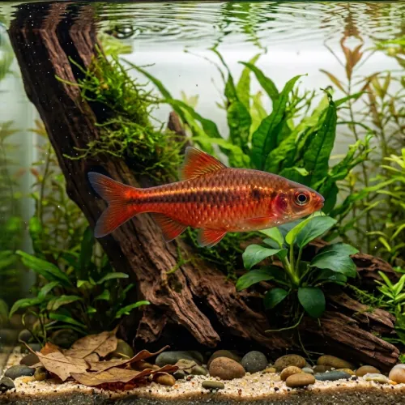

Nome popular principal
Barbo Cereja
Barbo Cereja, Titéia, Barbo Titéia, Cherry Barb
Ficha de peixe
Barbos e Ciprinídeos
Um dos barbos mais tranquilos e coloridos do aquarismo, ideal para trazer destaque avermelhado a aquários comunitários e plantados.

Nome popular principal
Barbo Cereja, Titéia, Barbo Titéia, Cherry Barb
Nome científico
Nome técnico essencial para taxonomia, cruzamento de manejo e referência editorial consistente.
Dificuldade de manejo
Use este nível como referência inicial, sempre considerando volume, estabilidade e compatibilidade do aquário.
Seções 4 a 6
Barbo Cereja tem hábito alimentar onívoro. Excelente. 1 a 2 vezes ao dia. Alimenta-se facilmente de rações secas em flocos ou micro-grãos, devendo receber complementação com pequenos alimentos vivos para intensificar o tom vermelho.
Machos têm corpo vermelho-cereja intenso, especialmente na época reprodutiva; fêmeas têm tom amarelo-acastanhado e corpo mais roliço. Tipo de reprodução: Ovíparo. Dificuldade de reprodução: Fácil. A desova ocorre de forma simples entre plantas de folhas finas, sendo recomendado separar os pais após a postura para proteger os ovos.
Alta. Substrato recomendado: Substrato escuro ou areia fina com bastante vegetação e abrigo. Necessidade de esconderijos: Média. Destaca toda a sua cor em aquários bem plantados, com troncos, substrato escuro e zonas de sombra.
Seção 2
Seção 1
Seção 7
Muito resistente e adaptável a variações de parâmetros, sendo excelente opção para iniciantes no aquarismo.
Seção 8
Não, ao contrário de outros barbos agressivos, o Barbo Cereja é muito pacífico e não costuma beliscar nadadeiras.
A cor vermelha do macho fica mais intensa quando mantido em aquário plantado com substrato escuro, boa alimentação e presença de fêmeas do grupo.
Recomenda-se manter um grupo mínimo de 6 indivíduos (com mais fêmeas do que machos) para promover o comportamento natural sem estresse.